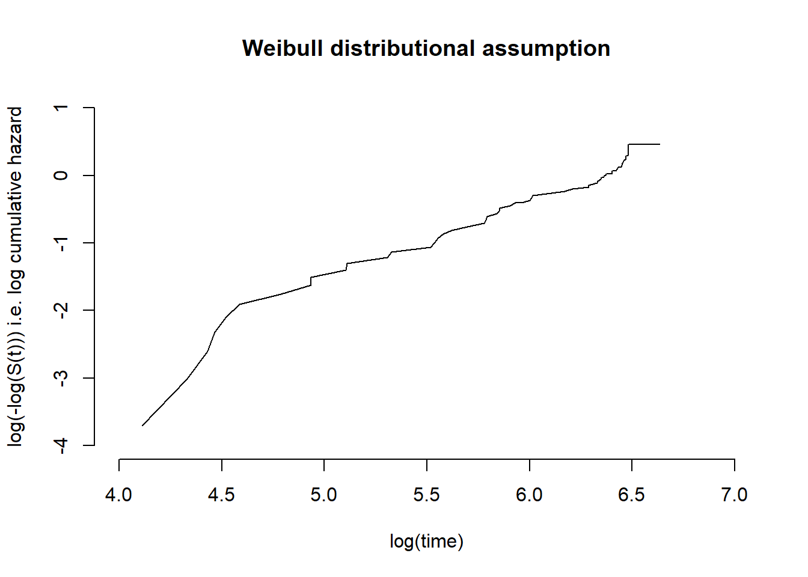

Assessing model assumptions using log-cumulative hazard plots
Background
Prior to fitting a model based on an assumed parametric form for the hazard function, a preliminary study of the validity of this assumption should be carried-out.
Let us compare the survivor function for the data with that from a chosen model. To do this we will transform the survivor function to produce a plot that should give a straight line if the assumed model is appropriate.
For the Weibull, twice taking logs of the survivor function with scale parameter \(\lambda\) and shape parameter \(\gamma\)
\[
log(-log S(t)) = log \lambda + \gamma log t
\]
A plot of \(log(-log S(t))\) against \(log(t)\) would give an approximately straight line if the Weibull assumption is reasonable. The plot could also be used to give a rough estimate of the parameters.
Similarly, for the log-logistic distribution
\[
log S(t)/(1 - S(t)) = \theta - \kappa log t
\]
For the log-normal distribution
\[
\Phi^{-1} (1 - S(t)) = (log t - \mu) / \sigma
\] The slope and intercept of this line provide estimates of \(\sigma^{-1}\) and \(-\mu/\sigma\), respectively.
We can also check the assumption made with using the Cox regression model of proportional hazards by inspecting the log-cumulative hazard plot.
\[
log H_i(t) = \beta x_i + log H_0(t)
\]
The transformed curves for different values of the explanatory variables will be parallel if PH holds.
R examples
The package commonly used for survival analyses in R is the survival package (https://cran.r-project.org/web/packages/survival/vignettes/survival.pdf). We will begin by repeating an example from the survival help documentation.
This uses their reliability data. Firstly a little data manipulation is done before we plot the cumulative hazard plot against time using the in-built survival package plotting method with the cumhaz=TRUE argument.
fit <-survfit(Surv(time1, time2, status) ~1, data = vdata, id = id)plot(fit, cumhaz =TRUE, xlab ="Days", ylab ="Cumulative hazard")
We can plot the log-cumulative hazard against log-time by simply plotting the survfit output values directly by specifying the x and y data explicitly.
plot(log(fit$time), log(fit$cumhaz), xlab ="log-Days", ylab ="Log-cumulative hazard", type ="l")
For the following we will require the latest development version fo the survHE package. We can obtain this from GitHub with the following.
The plot_transformed_km also provides plots for log-normal and log-logistic distribution assumptions with the corresponding transformation to the survival data.
Further, we could use the flexsurv package. This package contains lots of functions for a range of survival distributions.
The cumulative hazard can be plotted with the flexsurv plotting method with argument type = "cumhaz". The Kaplan-Meier is also overlaid by the model fit.
library("flexsurv")fs1 <-flexsurvreg(Surv(time1, time2, status) ~1, data = vdata, dist ="exp")plot(fs1, type ="cumhaz")

fs2 <-flexsurvreg(Surv(time1, time2, status) ~1, data = vdata, dist ="weibull")plot(fs2, type ="cumhaz")